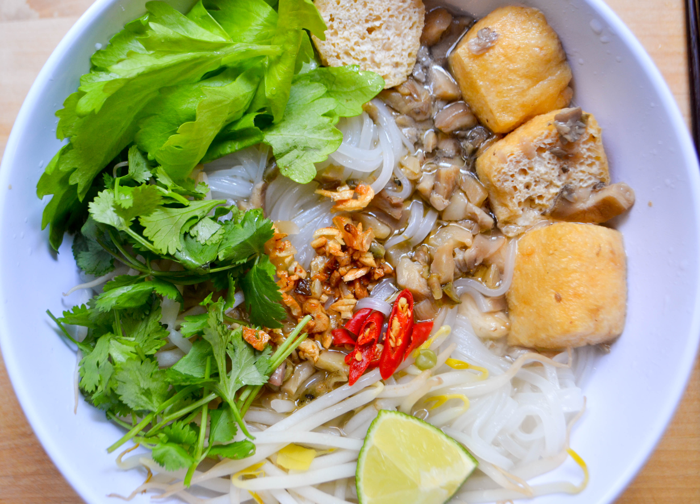

Home Page
Vietnamese Vegan Noodle - Hu Tiu Chay

Ingredients
- 2 packs Fresh Rice Stick Noodle
- 2 pears, washed & peeled
- 3 medium carrots, washed & peeled
- 1 large Japanese daikon, washed & peeled
- 1 medium Opo/Asian Squash, washed & peeled
- 8 oz. fresh Shiitake mushroom, washed (or equivalent of dried Shiitake mushroom
- 10 oz. king oyster mushroom, washed & sliced
- 10 oz. white oyster mushroom, washed
- 10 oz. straw mushroom, washed
- 5 oz. Taiwanese dried vegan beef slice
- 1 pack beansprout, washed & drained
- 1 pack tofu skin
- 1 cup vegetable oil
- vegetable/mushroom bouillon
- Pink Himalayan salt (or Kosher salt)
- sugar
- cilantro, washed
- lime, sliced
Directions
- Soak the vegan beef slices and soak dried Shiitake mushroom (obmit if using fresh Shiitake mushroom) in seperate bowls for 20 minutes.
Drain after the vegan beef slices and dried mushroom are fully soaked.
- Heat 6 liters of water in a large pot until boil. In the meantime, slice peeled carrots and daikon into bitesize pieces.
Slice pears and Opo squash in halves.
- In a deep fry skillet, heat 1 cup of vegetable oil until 350 F. Deep fry the tofu skin until golden. Drain excessive oil over paper towels
- When the water in the pot starts to vaporize, add pears, carrots, and daikon. Cook for 10 minutes under low/medium heat,
then add Opo squash, straw mushroom, white & king oyster mushroom, Shiitake mushroom, and vegan beef slices
. Continue to cook under low/medium heat for 30 minutes.
- Add 3 tablespoons of salt, 2 tablespoon of vegetable bouillon, 6 tablespoons of sugar for taste. Adjust for personal preference.
- Divide noodles and beansprouts into servings. In another pot, heat 3 litters of water until boil. Soak each serving of nooles and beansprout
for 1 minutes, then drain and place in a bowl.
- Add soup and vegetables to the bowl. Garnish with cilantro and lime slices.